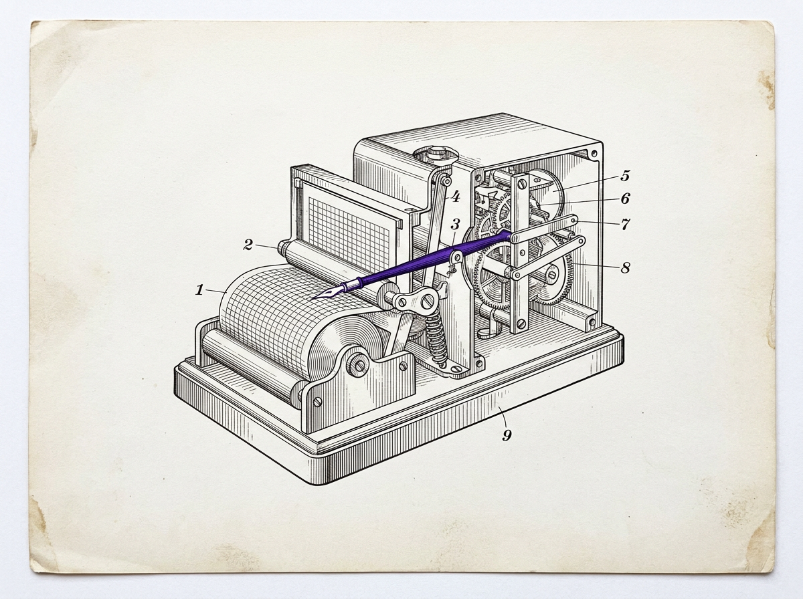

SHAURYA GUPTA · INDEPENDENT RESEARCHER
Oversight capacity in AI-mediated institutions.
I build formal models of what happens when human review sits inside an AI decision pipeline, and test them against public administrative and repository data. Work in progress, documented as it goes — including the parts that failed.

Oversight saturation leaves a signature in ordinary telemetry
The one peer-reviewed, accepted result — and the real data behind it. SEDI (State-Estimation Degradation Index) measures oversight quality from boundary telemetry alone — timestamps, queue depth, dispute rates — without reading a single decision under review.
The questions the work keeps returning to
Most of what follows is an attempt at one of these. Start with the question, not the publication list.
What's open right now, and its honest state
Three active threads beyond the flagship. Each links to the actual paper or data, and each names where it currently stands — including what isn't done.
Data collection
Active
Working paper
From the notebook
Dated entries, written as the work happened — findings, observations, and the failures kept in on purpose.
A small open dataset behind the papers
Not a platform, not a dashboard — a modest, versioned collection of public data and five metrics I reuse across this work, so the scraping and provenance don't get rebuilt every paper.
Capacity Observatory